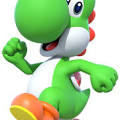

Personagens de Mario
Mario

Mario é um personagem fictício da franquia e série de jogos eletrônicos Mario da Nintendo, criado pelo desenvolvedor e designer de jogos eletrônicos japonês Shigeru Miyamoto.
Luigi

Luigi é um personagem fictício de videogames produzido pela Nintendo. Criado pelo designer de jogos Shigeru Miyamoto, Luigi é irmão do Mario e é um dos mascotes da série, ele é o seu companheiro em vários jogos.
Toad

Toad, conhecido no Japão como Kinopio, é um personagem criado pelo designer de videogame japonês Shigeru Miyamoto para a franquia Mario da Nintendo.
Yoshi

Yoshi é um personagem fictício, um dinossauro antropomórfico, que aparece na série de videogames Mario, produzida pela Nintendo. Sua primeira aparição foi em Super Mario World, para Super Nintendo, e posteriormente ele passou a estrelar sua própria série de video-games de plataforma e puzzle.